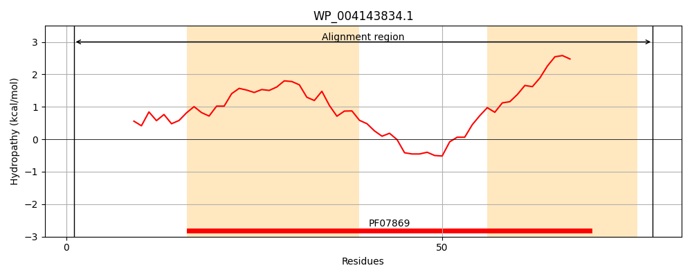
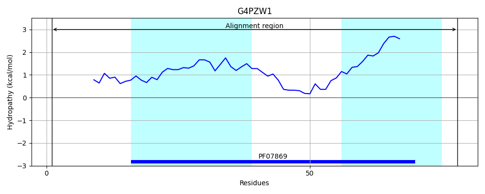
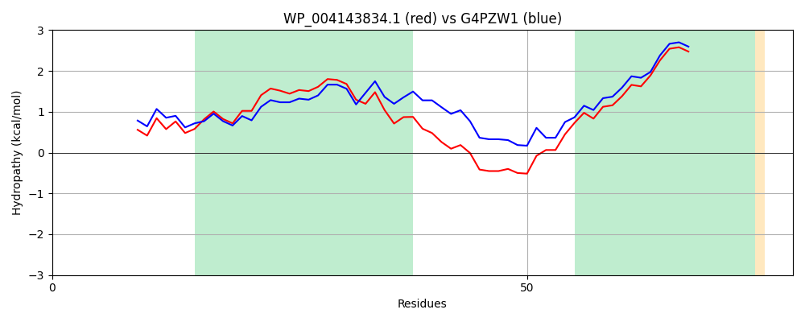

Hit Accession: G4PZW1
Hit TCID: 8.A.48.1.1
Hit Description: gnl|BL_ORD_ID|4733 gnl|TC-DB|G4PZW1|8.A.48.1.1 Putative inner membrane protein OS=Escherichia coli O7:K1 str. CE10 GN=ydhI PE=4 SV=1
Mach Len: 78
e:0.000000
Query TMS Count : 2
Hit TMS Count: 2
TMS-Overlap Score: 2.200000
Predicted Substrates:None
BLAST Alignment:
| Protein Hydropathy Plots: | |
|---|---|
|  |  |
Pairwise Alignment-Hydropathy Plot: | |
|  | |